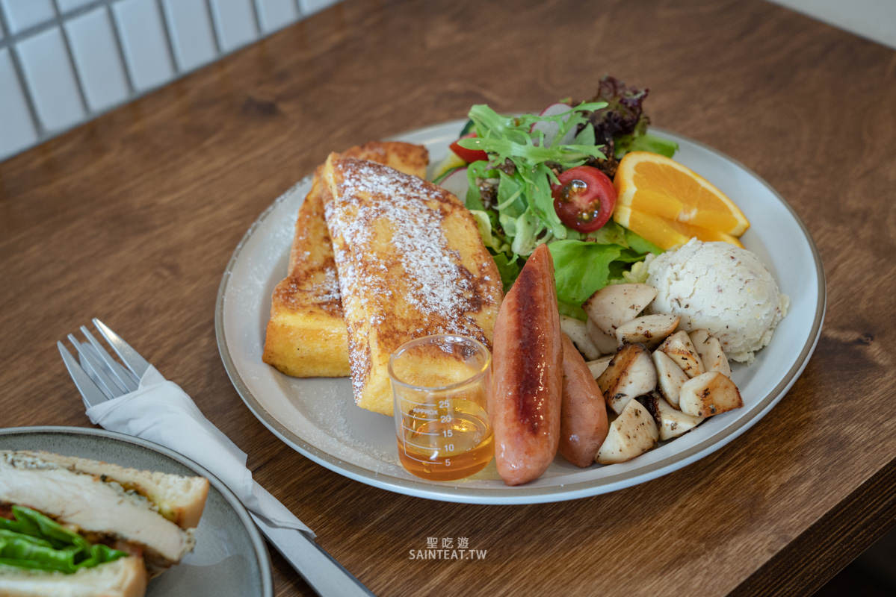
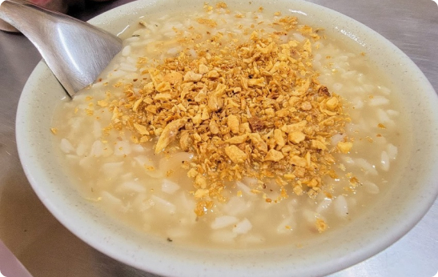
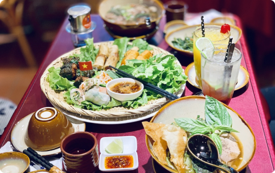

以親和力、風趣幽默的風格和獨特的才華
贏得了廣大觀眾的喜愛和支持
陳零九
風格親和力十足，具有敏銳的觀察力和快速的反應能力，經常在節目中帶出出人意料的笑點和趣味。
莎莎
汐止必吃美食top10
想深刻體驗汐止的文化，就從品嘗在地小吃開始吧！
-

-
阿義炸雞
雞肉鮮嫩多汁，外皮酥脆香氣四溢。店家使用的是100%的雞腿肉，加上獨特的炸醬料，每一口都能吃到濃濃的肉汁和獨特的香氣。
- 
-
左撇子早午餐
暖橘色的燈光讓室內充滿溫暖的氛圍,滿室的咖啡香氣。左撇子的推薦餐點是早安法式:內容物法式吐司還有生菜、炒菇、德式香腸微焦迷迭香炒菇,口感細緻又彈牙。讓人彷彿置身在法國的街邊,用豐盛的Brunch開啟一天的生活
-
挫冰女王
以自製的冰品和精心調配的飲料聞名於當地。其冰品口感細緻，味道鮮美，而且不添加任何人工香料和色素，非常健康。店家還推出了許多創意口味，例如巧克力香草、黑糖鳳梨、芒果珍珠等，深受消費者喜愛。
-

-
隱家茶寮
汐止美食-『隱家茶寮』位於汐科站旁日式定食，日式早午餐，抹茶生乳酪蛋糕，下午茶，菜單價位，商業午餐，馬鈴薯燉肉！ 抹茶生乳酪蛋糕，使用京都抹茶粉，很成熟的味道 上面灑的抹茶粉有加分，乳酪中也有抹茶的香氣。抹茶控絕對不能錯過這家餐點~
- 
-
車頭鹹粥
汐止車頭鹹粥的特點是湯粥濃稠、口感豐富、香氣四溢。除了米粉、豬肉、花生等傳統的配料外，汐止車頭鹹粥還會加入其他配料，如燙青菜、蝦米、瑤柱等，使湯粥更加豐富多樣化。此外，汐止車頭鹹粥的湯粥口感濃郁，喝起來非常滋味，讓人回味無窮。
-
囍記雞肉飯專門店
雞肉飯的肉片是不規則的形狀，每一塊肉的大小、形狀和部位都不一樣，但整體吃起來肥瘦適中，配上油蔥、雞油、醬油調味，
-
金豐八寶冬粉
囍記雞肉飯是店家最經典的招牌菜，以雞肉煮熟後切成小塊，搭配上綿密的米飯和香氣十足的醬料，入口即化的口感令人回味無窮。滷肉飯、肉燥飯也非常美味。
- 
-
越南美食
店家有很多道地的越南美食,招牌:波蘭春卷 為著名的越南傳統小吃，通常以豬肉、蝦仁、蔬菜等為主要原料，加上特殊的辣椒醬和生菜等配料包裹在薄餅皮中，口感鮮香爽口。
-

-
丞相鵝肉
丞相鵝肉的肉質鮮嫩，口感細膩，且不膩口。經過獨特的烹製方法，鵝肉表皮烤得香脆，肉內則保持了嫩滑的質感，加上調味料的適當調配，使得這道菜鹹甜適中，讓人食指大動。
.jpg) 旅遊
旅遊
.jpg) 美食
美食
.jpg) 住宿
住宿